library(tidyverse)
library(flexplot)
library(foreign)
library(dplyr)
library(tm)
library(ggplot2)
library(forcats)
library(rempsyc)
library(easystats)
library(kableExtra)
#Específicos para series temporais
library(prophet)
library(forecast)
library(tseries)8 Lista 7 - Séries Temporais (ARIMA)
8.1 Pacotes
8.2 Limpando o ambiente
9 Cigarro
9.1 Carregando os dados e modificando o tipo de variável
original = read.spss("CigarrosROD_1.sav", to.data.frame=TRUE)
glimpse(original)Rows: 20
Columns: 2
$ Dia <dbl> 1, 2, 3, 4, 5, 6, 7, 8, 9, 10, 11, 12, 13, 14, 15, 16, 17,…
$ cigarrosROD <dbl> 6, 10, 4, 13, 4, 11, 4, 6, 4, 15, 5, 14, 5, 21, 10, 31, 13…db = original9.2 Verificando se os dados são estacionários
Iniciaremos nossa primeira análise para verificar a estacionaridade dos dados por meio de uma abordagem gráfica. Este gráfico simples exibirá o número de cigarros consumidos ao longo do tempo, apresentando uma linha média que atravessa toda a linha temporal. A ideia é observar se os números de cigarros oscilam próximos à média, proporcionando uma visualização intuitiva da estacionariedade dos dados.
# Plot estilizado
# media_cigarros <- mean(db$cigarrosROD)
#
# # Cria o gráfico com ggplot
# ggplot(data = data.frame(cigarrosROD = db$cigarrosROD), aes(x = seq_along(cigarrosROD), y = cigarrosROD)) +
# geom_line(color = "black", size = 1) +
# geom_point(color = "black", size = 3) +
# geom_hline(yintercept = media_cigarros, linetype = "dashed", color = "blue", size = 1) + # Adiciona a linha média
# labs(x = "Dias", y = "Cigarros por dia") +
# scale_x_continuous(breaks = seq_along(db$cigarrosROD), labels = seq_along(db$cigarrosROD)) +
# theme_minimal() +
# theme(panel.grid = element_blank(),
# axis.ticks = element_line()) # Adiciona ticks nos eixos x e yPlot simples
media_cigarros <- mean(db$cigarrosROD)
# plot mais simples
plot.ts(db$cigarrosROD)
abline(h = media_cigarros, col = "blue", lty = 2, lwd = 2)
axis(1, at = db$Dia, labels = db$Dia)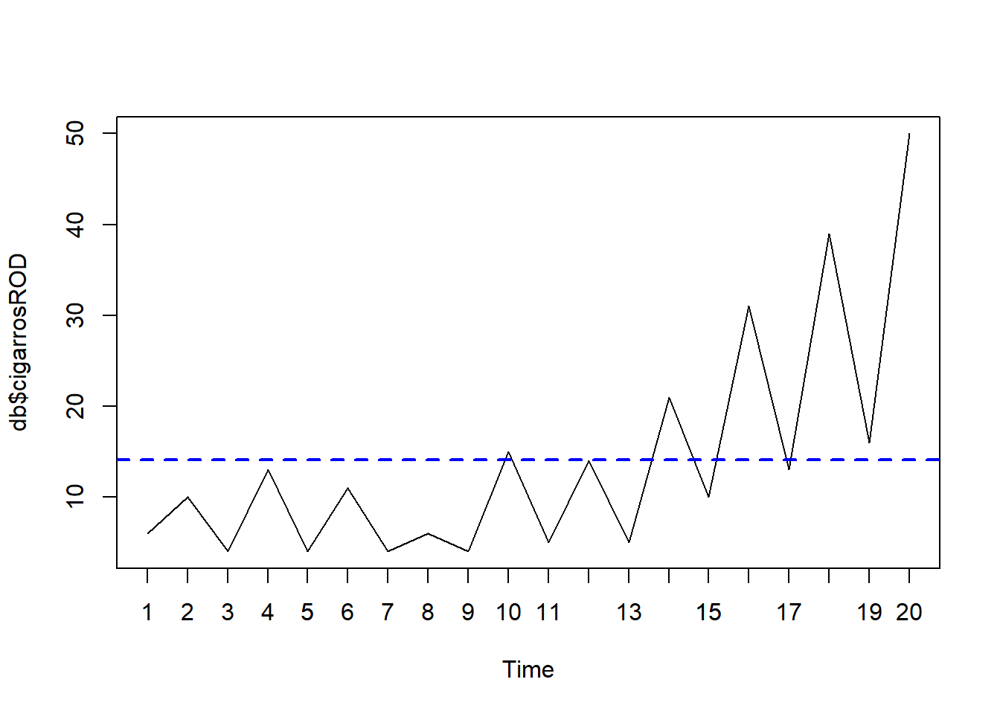
Claramente os dados desviam bastante da média, logo essa não é uma série estacionária.
Adf teste
Podemos também utilizar o Augmented Dickey-Fuller (ADF) Test para avaliar a estacionaridade em séries temporais. A função para realizar o teste é a adf.test().
Interpretação do Resultado:
- Se a estatística do teste for menor que o valor crítico (p < 0.05), rejeitamos a hipótese nula e concluímos que a série é estacionária.
- Se a estatística do teste for maior que o valor crítico (p > 0.05), falhamos em rejeitar a hipótese nula, sugerindo que a série é não estacionária.
# Adf teste
adf.test(db$cigarrosROD)
Augmented Dickey-Fuller Test
data: db$cigarrosROD
Dickey-Fuller = -0.38979, Lag order = 2, p-value = 0.9797
alternative hypothesis: stationaryCorroborando a análise visual, falhamos em rejeitar a hipótese nula, logo podemos assumir que a série temporal em questão não é estacionária. Em seguida vamos ver como podemos ajustar os dados.
Autocorrelação
A função acf() (AutoCorrelation Function) no R é utilizada para calcular e visualizar os coeficientes de autocorrelação em uma série temporal. A autocorrelação mede a correlação entre uma observação e suas observações anteriores em diferentes defasagens (lags de tempo).
# Calcula as autocorrelações e cria o gráfico
autocorrelacoes = acf(db$cigarrosROD, plot = FALSE)
autoplot(autocorrelacoes)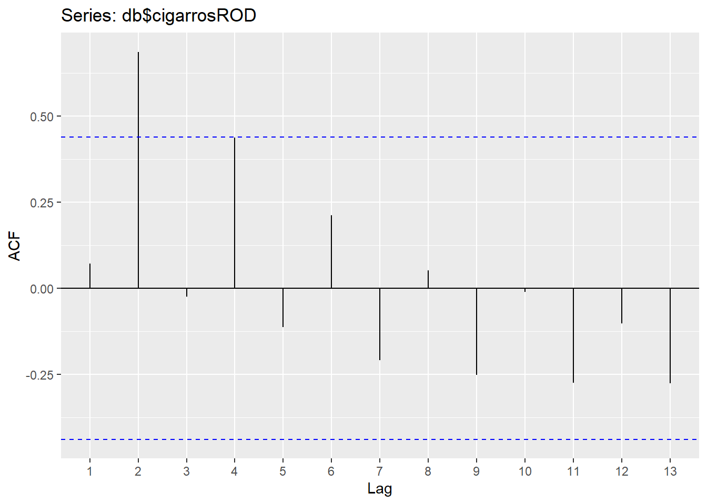
ggtsdisplay(db$cigarrosROD)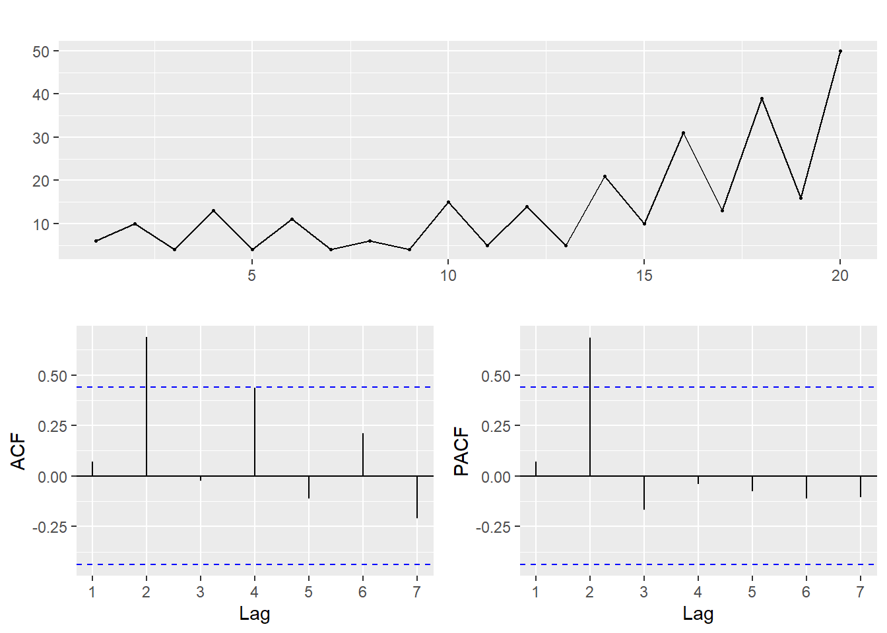
Os valores de lag que tiveram um AFC além do intervalo de confiança (linha tracejada), são candidatos para utilizarmos em nosso modelo ARIMA. Portanto lag 2 e 4 são candidatos. Além disso podemos basear nossa decisão também o teste de Ljung-Box.
Teste Ljung-Box
O Teste Ljung-Box avalia para cada lag se a séria é estacionária ou não. Podemos testar individualmente para cada lag.
# Teste Ljung-Box com lag 2
Box.test(autocorrelacoes$acf , lag = 3, type = "Ljung-Box")
Box-Ljung test
data: autocorrelacoes$acf
X-squared = 8.5179, df = 3, p-value = 0.03644lag(db$cigarrosROD,1) [1] NA 6 10 4 13 4 11 4 6 4 15 5 14 5 21 10 31 13 39 16Uma outra forma é criar um dataframe com todos os valores de lags calculados na autocorrelação.
# Obtém o número máximo de lags disponíveis
max_lags <- length(autocorrelacoes$acf) - 1
# Inicialize os vetores para armazenar os resultados
lags <- numeric(max_lags)
p_values <- numeric(max_lags)
# Itere sobre os lags
for (lag in 1:max_lags) {
# Execute o teste de Ljung-Box para o lag atual
resultado_teste <- Box.test(autocorrelacoes$acf, lag = lag, type = "Ljung-Box")
# Armazene os resultados
lags[lag] <- lag
p_values[lag] <- resultado_teste$p.value
}
# Crie um dataframe com os resultados
resultados_df <- data.frame(Lag = lags, P_Value = p_values)
kable(resultados_df)| Lag | P_Value |
|---|---|
| 1 | 0.9409683 |
| 2 | 0.0166341 |
| 3 | 0.0364377 |
| 4 | 0.0200419 |
| 5 | 0.0236724 |
| 6 | 0.0359384 |
| 7 | 0.0197526 |
| 8 | 0.0337181 |
| 9 | 0.0101406 |
| 10 | 0.0150763 |
| 11 | 0.0030557 |
| 12 | 0.0038952 |
| 13 | 0.0006256 |
Ou ainda
tsdiag(auto.arima(db$cigarrosROD))
9.3 Transformação variabilidade e estacionária
Primeiro vamos modificar a série para que tenha variabilidade constante
lambda = BoxCox.lambda(db$cigarrosROD)
lambda[1] -0.1713367var_const = BoxCox(db$cigarrosROD, lambda = lambda)
ggtsdisplay(var_const)
E agora podemos ajustar a serie para que ela fique estacionária.
ndiffs(var_const)[1] 1estacio = diff(var_const, 1)
ggtsdisplay(estacio)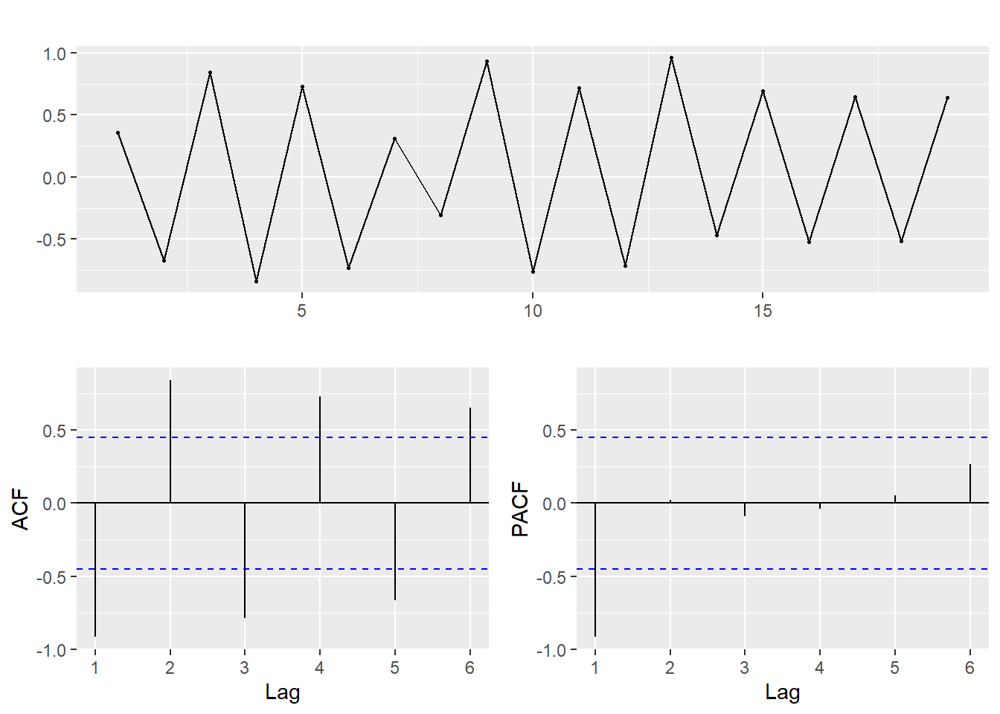
De acordo com os resultados, qualquer lag, a não ser o lag 1, poderá ser utilizado para transformar os dados.
Para decidir devemos levar em conta tanto a análise gráfica da autocorrelação quanto o teste de Ljung-Box.
Logo os lags 2 e 4 são bons candidatos. Por parcimônia e sem nenhum critério teórico, vamos optar pelo lag menor, ou seja, lag 2.
9.4 Transformando os dados para estacionários
Para modificar nossa série temporal utilizando lag 2 vamos utilizar a função diff().
# Log
lag_2 = diff(db$cigarrosROD, differences = 2) # posso colocar o log da diferença também caso os valores fiquem muito pequenos.Plot
media_lag_2 = mean(lag_2)
plot.ts(lag_2)
abline(h = media_lag_2, col = "blue", lty = 2, lwd = 2)
axis(1, at = db$Dia, labels = db$Dia)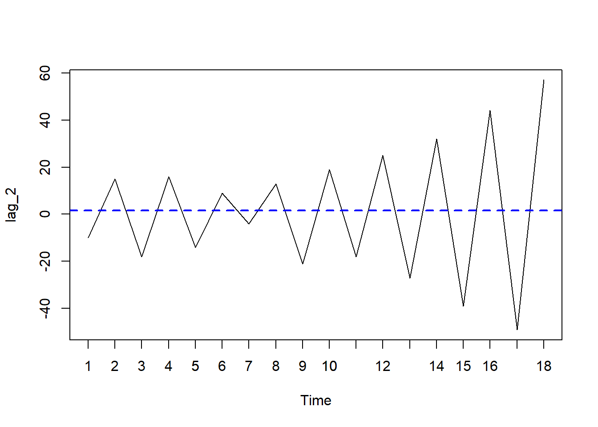
Pronto! Agora os valores estão ocilando em torno da média. Apenas para confirmar que agora temos uma série temporal estacionária, podemos rodar novamente o adf.test.
adf.test(lag_2) # testar com outros valores de K(lag) para verificar o p-value
Augmented Dickey-Fuller Test
data: lag_2
Dickey-Fuller = -4.3237, Lag order = 2, p-value = 0.01196
alternative hypothesis: stationaryEsse banco de dados era apenas para transformar os dados não estacionários para estacionários. Vamos agora carregar outro banco de dados e criar o modelo ARIMA.
9.5 Dados séries temporais
original_ts = read.spss("dados series temporais.sav", to.data.frame=TRUE)re-encoding from CP1252db_ts = original_ts
glimpse(db_ts)Rows: 120
Columns: 11
$ date <dbl> 12818995200, 12821673600, 12824092800, 12826771200, 12829…
$ men <dbl> 11357.92, 10605.95, 16998.57, 6563.75, 6607.69, 9839.00, …
$ women <dbl> 16578.93, 18236.13, 43393.55, 30908.49, 28701.58, 29647.5…
$ horas <dbl> 7978, 8290, 8029, 7752, 8685, 7847, 7881, 8121, 7811, 870…
$ divida <dbl> 73, 88, 65, 85, 74, 87, 79, 72, 83, 111, 74, 105, 66, 59,…
$ idade <dbl> 34, 29, 24, 20, 17, 30, 28, 27, 35, 25, 30, 45, 35, 20, 2…
$ propaganda <dbl> 22294.48, 27426.47, 27978.66, 28949.65, 22642.27, 27210.6…
$ escolaridade <dbl> 20, 20, 26, 22, 21, 23, 22, 20, 15, 20, 16, 29, 22, 28, 2…
$ YEAR_ <dbl> 1989, 1989, 1989, 1989, 1989, 1989, 1989, 1989, 1989, 198…
$ MONTH_ <dbl> 1, 2, 3, 4, 5, 6, 7, 8, 9, 10, 11, 12, 1, 2, 3, 4, 5, 6, …
$ DATE_ <chr> "JAN 1989", "FEB 1989", "MAR 1989", "APR 1989", "MAY 1989…Plot simples
media_sal_men <- mean(db_ts$men)
db_season = ts(db_ts$men,
frequency = 12,
start = c(1989, 1))
ts.plot(db_season)
abline(h = media_sal_men, col = "blue", lty = 2, lwd = 2)
seasonplot(db_season,
col = rainbow(12),
year.labels = TRUE,
type = "o",
pch = 16)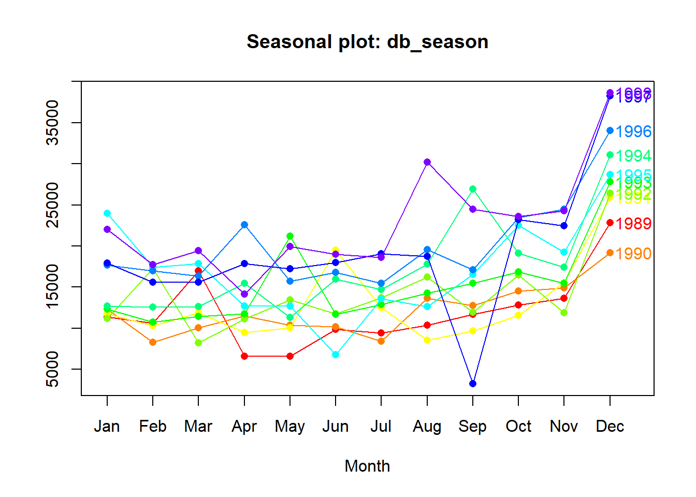
ggtsdisplay(db_season)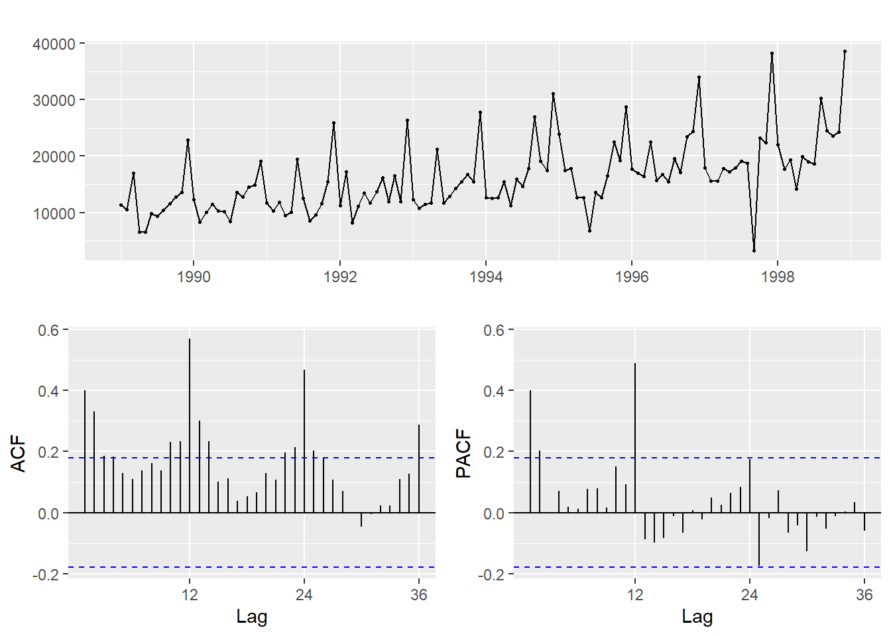
Semelhante ao ARIMA (0,0,0)
Adf teste
# Adf teste
adf.test(db_ts$men, k =1) #já está no formato estacionárioWarning in adf.test(db_ts$men, k = 1): p-value smaller than printed p-value
Augmented Dickey-Fuller Test
data: db_ts$men
Dickey-Fuller = -6.1931, Lag order = 1, p-value = 0.01
alternative hypothesis: stationaryLjung-Box
Descrever
# Teste Ljung-Box com lag 2
Box.test(db_ts$men , lag = 1, type = "Ljung-Box")
Box-Ljung test
data: db_ts$men
X-squared = 19.742, df = 1, p-value = 0.0000088659.6 Modelo ARIMA (1,0,0)
modelo_sal_men = Arima(db_ts$men, order = c(1,0,0))Plot 1 do modelo (1,0,0)
# Supondo que você tenha as séries temporais 'modelo_sal_men$fitted' e 'db_ts$men'
# Cria o gráfico
plot(modelo_sal_men$x, type = "l", col = "red", lty = 1, lwd = 2, xlab = "Tempo", ylab = "Salário")
lines(modelo_sal_men$fitted, col = "blue", lty = 1, lwd = 2)
# Adiciona uma legenda
legend("topright", legend = c("Real", "Modelo"), col = c("red", "blue"), lty = c(1, 1), lwd = 2)
# Adiciona um título ao gráfico
title(main = "Valores e Reais e do Modelo ARIMA de Salário para Homens")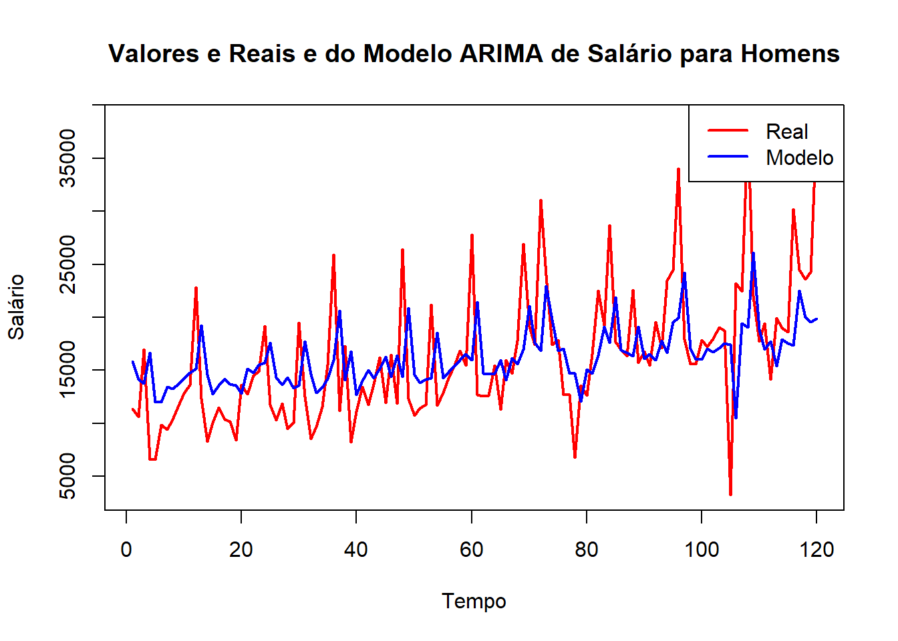
9.7 Modelo ARIMA (0,1,0)
modelo2_sal_men = Arima(db_ts$men, order = c(0,1,0))Plot 1 do modelo (0,1,0)
# Supondo que você tenha as séries temporais 'modelo2_sal_men$fitted' e 'db_ts$men'
# Cria o gráfico
plot(modelo2_sal_men$x, type = "l", col = "red", lty = 1, lwd = 2, xlab = "Tempo", ylab = "Salário")
lines(modelo2_sal_men$fitted, col = "blue", lty = 1, lwd = 2)
# Adiciona uma legenda
legend("topright", legend = c("Real", "Modelo"), col = c("red", "blue"), lty = c(1, 1), lwd = 2)
# Adiciona um título ao gráfico
title(main = "Valores e Reais e do Modelo ARIMA de Salário para Homens")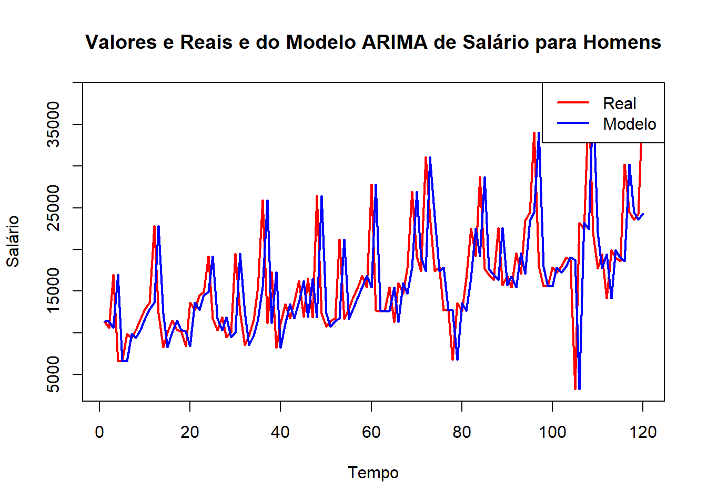
9.8 Modelo autoARIMA
Assim como o SPSS o R também tem uma função que determina automaticamente os parâmetros p, d, q. Vamos verificar qual modelo a função auto.arima()sugere.
# Para verificar qual o modelo sugerido pela função auto.arima
auto.arima(db_ts$men, trace = TRUE)
ARIMA(2,1,2) with drift : Inf
ARIMA(0,1,0) with drift : 2434.823
ARIMA(1,1,0) with drift : 2412.096
ARIMA(0,1,1) with drift : Inf
ARIMA(0,1,0) : 2432.897
ARIMA(2,1,0) with drift : 2411.86
ARIMA(3,1,0) with drift : 2408.495
ARIMA(4,1,0) with drift : 2407.461
ARIMA(5,1,0) with drift : 2408.674
ARIMA(4,1,1) with drift : Inf
ARIMA(3,1,1) with drift : Inf
ARIMA(5,1,1) with drift : Inf
ARIMA(4,1,0) : 2405.816
ARIMA(3,1,0) : 2406.731
ARIMA(5,1,0) : 2407.075
ARIMA(4,1,1) : 2394.525
ARIMA(3,1,1) : 2392.515
ARIMA(2,1,1) : 2392.416
ARIMA(1,1,1) : 2391.073
ARIMA(0,1,1) : 2393.07
ARIMA(1,1,0) : 2410.255
ARIMA(1,1,2) : 2392.894
ARIMA(0,1,2) : 2391.92
ARIMA(2,1,0) : 2410.02
ARIMA(2,1,2) : Inf
ARIMA(1,1,1) with drift : Inf
Best model: ARIMA(1,1,1) Series: db_ts$men
ARIMA(1,1,1)
Coefficients:
ar1 ma1
0.2036 -0.9139
s.e. 0.1002 0.0347
sigma^2 = 29737029: log likelihood = -1192.43
AIC=2390.86 AICc=2391.07 BIC=2399.2A função sugeriu o modelo 1, 1, 1. Vamos verificar os resultados.
modelo_auto_sal_men = Arima(db_ts$men, order = c(1,1,1))Plot 1 do modelo (1,1,1)
# Supondo que você tenha as séries temporais 'modelo_atuo_sal_men$fitted' e 'db_ts$men'
# Cria o gráfico
plot(modelo_auto_sal_men$x, type = "l", col = "red", lty = 1, lwd = 2, xlab = "Tempo", ylab = "Salário")
lines(modelo_auto_sal_men$fitted, col = "blue", lty = 1, lwd = 2)
# Adiciona uma legenda
legend("topright", legend = c("Real", "Modelo"), col = c("red", "blue"), lty = c(1, 1), lwd = 2)
# Adiciona um título ao gráfico
title(main = "Valores e Reais e do Modelo ARIMA de Salário para Homens")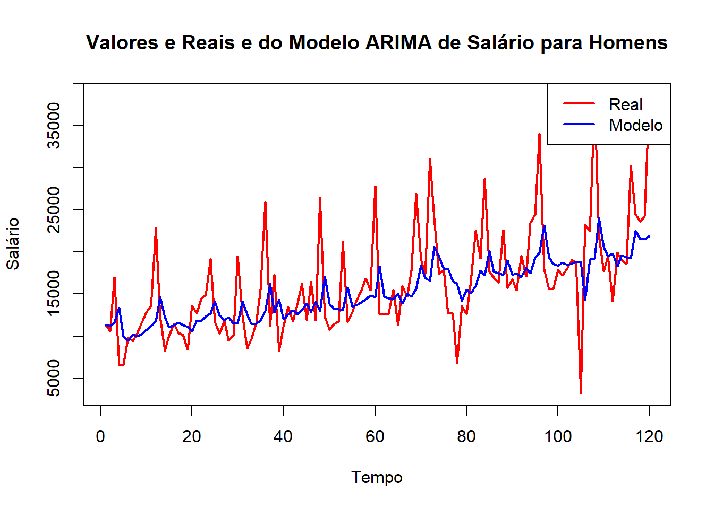
9.9 Homens - Modelo com variáveis independentes
Atenção!
Ainda falta modificar os índices p, d, q das variáveis indepentendes como foi feito no SPSS.
Auto arima
# Defina as variáveis independentes originais
nomes_variaveis <- c("horas", "divida", "idade", "propaganda", "escolaridade")
# Crie a matriz de covariáveis
covars <- as.matrix(db_ts[, nomes_variaveis, drop = FALSE])
# Atribua os nomes diretamente à matriz de covariáveis
colnames(covars) <- nomes_variaveis
#
# covars <- cbind(
# db_ts$horas,
# db_ts$divida,
# db_ts$idade,
# db_ts$propaganda,
# db_ts$escolaridade
# )
auto.arima(db_ts$men, xreg = covars)Series: db_ts$men
Regression with ARIMA(1,0,0) errors
Coefficients:
ar1 intercept horas divida idade propaganda escolaridade
0.1968 -23753.966 2.0271 34.5286 342.9908 0.2046 -30.3841
s.e. 0.1000 2752.767 0.2204 20.1900 43.9319 0.0733 41.3101
sigma^2 = 8316739: log likelihood = -1122.71
AIC=2261.43 AICc=2262.72 BIC=2283.73Modelo sugerido é o c(1,0,0)
# Ajuste o modelo ARIMA com covariáveis
modelo_completo = Arima(
db_ts$men,
order = c(1, 0, 0),
xreg = covars,
)# Defina as variáveis independentes originais
nomes_variaveis <- c("horas", "divida", "idade", "propaganda", "escolaridade")
# Inicialize uma lista para armazenar os modelos ajustados para cada VI
modelos_vi <- list()
# Loop através das variáveis independentes
for (variavel in nomes_variaveis) {
# Selecione a VI específica
variavel_ts <- db_ts[, variavel, drop = FALSE]
# Ajuste as ordens p, d, q para a VI específica
ordens_vi <- c(1, 0, 0) # p, d, q
# Ajuste o modelo ARIMA para a VI específica
modelo_vi <- Arima(
variavel_ts,
order = ordens_vi,
include.mean = TRUE,
transform.pars = TRUE,
fixed = NULL,
include.drift = FALSE,
method = "ML", # Mude conforme necessário
optim.control = list(trace = FALSE, REPORT = 1),
kappa = 1
)
# Adicione o modelo ao vetor de modelos
modelos_vi[[variavel]] <- modelo_vi
}
# Agora, você tem modelos ajustados para cada VI na lista modelos_vi
# Combine os modelos ARIMA para as VI em uma única matriz
covars <- cbind(
modelos_vi$horas$fitted,
modelos_vi$divida$fitted,
modelos_vi$idade$fitted,
modelos_vi$propaganda$fitted,
modelos_vi$escolaridade$fitted
)
# Ajuste o modelo ARIMA principal com as covariáveis
modelo_completo <- Arima(
db_ts$men,
order = c(1, 0, 0),
xreg = covars,
seasonal = list(order = c(0, 0, 0)), # Adapte conforme necessário
include.mean = TRUE,
transform.pars = TRUE,
fixed = NULL,
include.drift = FALSE,
method = "ML", # Mude conforme necessário
optim.control = list(trace = FALSE, REPORT = 1),
kappa = 1
)Plot do modelo com VIs
# Criar um dataframe com as séries temporais
df_full <- data.frame(
Tempo = seq_along(modelo_completo$fitted),
Ajustado = modelo_completo$fitted,
Real = modelo_completo$x
)
# Criar o gráfico com ggplot2
ggplot(df_full, aes(x = Tempo)) +
geom_line(aes(y = Ajustado, color = "Ajustado"), size = 1) +
geom_line(aes(y = Real, color = "Real"), size = 1) +
labs(x = "Tempo", y = "Salário", title = "Valores Ajustados e Reais de Salário para Homens ao Longo do Tempo") +
scale_color_manual(values = c("Ajustado" = "blue", "Real" = "red"), guide = "legend") +
theme_minimal()Warning: Using `size` aesthetic for lines was deprecated in ggplot2 3.4.0.
ℹ Please use `linewidth` instead.Don't know how to automatically pick scale for object of type <ts>. Defaulting
to continuous.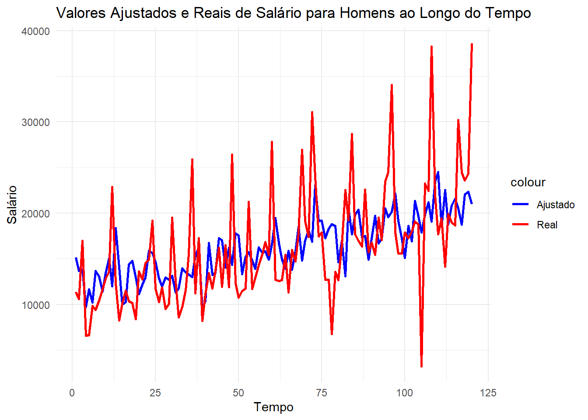
AIC, BIC e RMSE
performance(modelo_completo)# Indices of model performance
AIC | AICc | BIC | R2.modelos_vi$horas$fitted | R2.modelos_vi$divida$fitted | R2.modelos_vi$idade$fitted | R2.modelos_vi$propaganda$fitted | R2.modelos_vi$escolaridade$fitted | RMSE | Sigma
------------------------------------------------------------------------------------------------------------------------------------------------------------------------------------------------------------------
2421.052 | 6925.052 | 2443.352 | 0.397 | 0.213 | 0.722 | 5.366e-04 | 0.656 | 5442.460 | 5633.481Resultados
# Visualize o resumo do modelo
summary(modelo_completo)Series: db_ts$men
Regression with ARIMA(1,0,0) errors
Coefficients:
ar1 intercept modelos_vi$horas$fitted modelos_vi$divida$fitted
-0.1727 34621.57 0.7594 -607.0271
s.e. 0.1639 40027.85 1.3741 316.5860
modelos_vi$idade$fitted modelos_vi$propaganda$fitted
371.3498 0.1770
s.e. 127.6716 1.0677
modelos_vi$escolaridade$fitted
135.8938
s.e. 81.0383
sigma^2 = 31455262: log likelihood = -1202.53
AIC=2421.05 AICc=2422.35 BIC=2443.35
Training set error measures:
ME RMSE MAE MPE MAPE MASE ACF1
Training set -5.05266 5442.46 3863.789 -11.92625 27.46778 0.826093 0.002906111# db_ts$horas, xreg1
# db_ts$divida , xreg2
# db_ts$idade, xreg3
# db_ts$propaganda, xreg4
# db_ts$escolaridade xreg5Coeficientes e valores de p
library(lmtest) # pacote para calcular os estimates e valores de pWarning: package 'lmtest' was built under R version 4.3.2Carregando pacotes exigidos: zoo
Attaching package: 'zoo'The following objects are masked from 'package:base':
as.Date, as.Date.numeric# Use a função coeftest para obter coeficientes e p-valores
test_coef <- coeftest(modelo_completo)
# Acesse os coeficientes estimados e os p-valores
coeficientes <- round(test_coef[, "Estimate"], 3)
p_valores <- round(test_coef[, "Pr(>|z|)"], 3)
# Crie uma nova coluna com asteriscos para valores de p significativos
test_coef$Significativo <- ifelse(p_valores < 0.05, "*", "")Warning in test_coef$Significativo <- ifelse(p_valores < 0.05, "*", ""):
Realizando coerção de LHD para uma lista# Exiba os resultados
resultados <- data.frame(Coeficientes = coeficientes, p_valores = paste0(format(p_valores, digits = 3), test_coef$Significativo))
print(resultados) Coeficientes p_valores
ar1 -0.173 0.292
intercept 34621.566 0.387
modelos_vi$horas$fitted 0.759 0.581
modelos_vi$divida$fitted -607.027 0.055
modelos_vi$idade$fitted 371.350 0.004*
modelos_vi$propaganda$fitted 0.177 0.868
modelos_vi$escolaridade$fitted 135.894 0.094Mulheres - Modelo com variáveis independentes para
Verificar qual o melhor modelo utilizando as VIs no auto.arima
# Supondo que você tenha um dataframe 'db_ts' com as variáveis mencionadas
# Defina as variáveis independentes originais
nomes_variaveis <- c("horas", "divida", "idade", "propaganda", "escolaridade")
# Crie a matriz de covariáveis
covars <- as.matrix(db_ts[, nomes_variaveis, drop = FALSE])
# Atribua os nomes diretamente à matriz de covariáveis
colnames(covars) <- nomes_variaveis
#
# covars <- cbind(
# db_ts$horas,
# db_ts$divida,
# db_ts$idade,
# db_ts$propaganda,
# db_ts$escolaridade
# )
auto.arima(db_ts$women, xreg = covars)Series: db_ts$women
Regression with ARIMA(0,0,1) errors
Coefficients:
ma1 intercept horas divida idade propaganda escolaridade
0.3351 -37941.151 2.6828 90.5433 1.6294 0.9805 445.6786
s.e. 0.1096 6458.967 0.5145 52.4388 110.2176 0.1693 102.0171
sigma^2 = 49641429: log likelihood = -1229.95
AIC=2475.89 AICc=2477.19 BIC=2498.19Modelo sugerido é o c(0,0,1)
# Ajuste o modelo ARIMA com covariáveis
modelo_completo_women = Arima(
db_ts$women,
order = c(0, 0, 1),
xreg = covars
)
# Visualize o resumo do modelo
summary(modelo_completo_women)Series: db_ts$women
Regression with ARIMA(0,0,1) errors
Coefficients:
ma1 intercept horas divida idade propaganda escolaridade
0.3351 -37941.151 2.6828 90.5433 1.6294 0.9805 445.6786
s.e. 0.1096 6458.967 0.5145 52.4388 110.2176 0.1693 102.0171
sigma^2 = 49641429: log likelihood = -1229.95
AIC=2475.89 AICc=2477.19 BIC=2498.19
Training set error measures:
ME RMSE MAE MPE MAPE MASE ACF1
Training set -0.1962005 6837.081 4889 -3.414187 14.6811 0.5114592 -0.01923702# db_ts$horas, xreg1
# db_ts$divida , xreg2
# db_ts$idade, xreg3
# db_ts$propaganda, xreg4
# db_ts$escolaridade xreg5
checkresiduals(modelo_completo_women)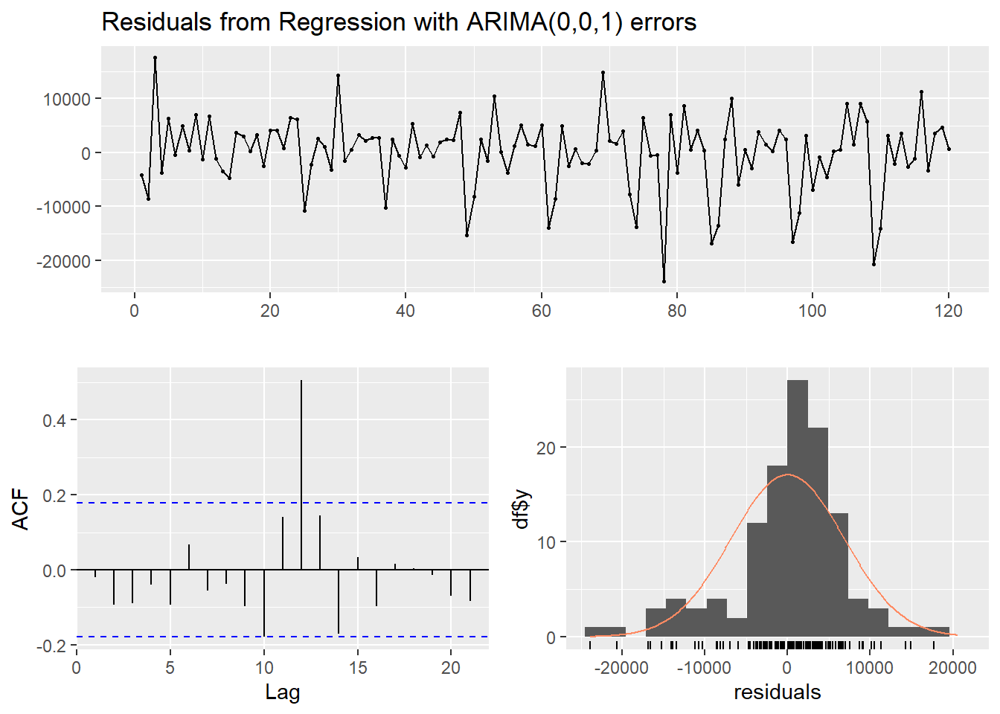
Ljung-Box test
data: Residuals from Regression with ARIMA(0,0,1) errors
Q* = 10.048, df = 9, p-value = 0.3466
Model df: 1. Total lags used: 10Plot do modelo com VIs
# Criar um dataframe com as séries temporais
df_full_women <- data.frame(
Tempo = seq_along(modelo_completo_women$fitted),
Ajustado = modelo_completo_women$fitted,
Real = modelo_completo_women$x
)
# Criar o gráfico com ggplot2
ggplot(df_full_women, aes(x = Tempo)) +
geom_line(aes(y = Ajustado, color = "Ajustado"), size = 1) +
geom_line(aes(y = Real, color = "Real"), size = 1) +
labs(x = "Tempo", y = "Salário", title = "Valores Ajustados e Reais de Salário para Mulheres ao Longo do Tempo") +
scale_color_manual(values = c("Ajustado" = "red", "Real" = "blue"), guide = "legend") +
theme_minimal()Don't know how to automatically pick scale for object of type <ts>. Defaulting
to continuous.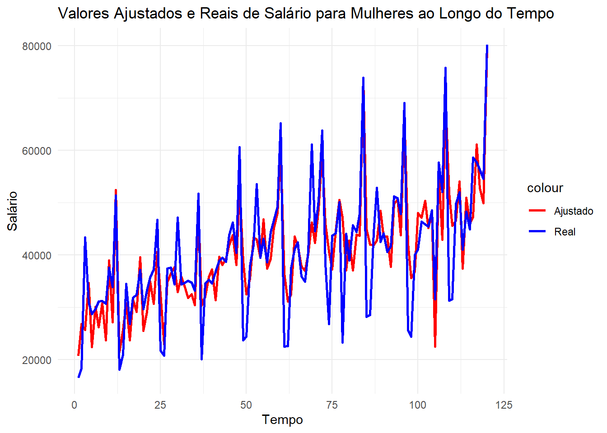
Coeficientes e valores de p
library(lmtest) # pacote para calcular os estimates e valores de p
# Use a função coeftest para obter coeficientes e p-valores
test_coef_women <- coeftest(modelo_completo_women)
# Acesse os coeficientes estimados e os p-valores
coeficientes_women <- round(test_coef_women[, "Estimate"], 3)
p_valores_women <- round(test_coef_women[, "Pr(>|z|)"], 3)
# Crie uma nova coluna com asteriscos para valores de p significativos
test_coef_women$Significativo <- ifelse(p_valores_women < 0.05, "*", "")Warning in test_coef_women$Significativo <- ifelse(p_valores_women < 0.05, :
Realizando coerção de LHD para uma lista# Exiba os resultados
resultados_women <- data.frame(Coeficientes = coeficientes_women, Pvalores = paste0(format(p_valores_women, digits = 3), test_coef_women$Significativo))
print(resultados_women) Coeficientes Pvalores
ma1 0.335 0.002*
intercept -37941.151 0.000*
horas 2.683 0.000*
divida 90.543 0.084
idade 1.629 0.988
propaganda 0.981 0.000*
escolaridade 445.679 0.000*9.10 Forecast (previsões)
Mulheres - 50 anos
women_salary_ts = ts(db_ts$women,
frequency = 12,
start = c(1989, 1))
fit_arima_women = auto.arima(women_salary_ts)
fcast_women = forecast(fit_arima_women, h=50)
autoplot(fcast_women)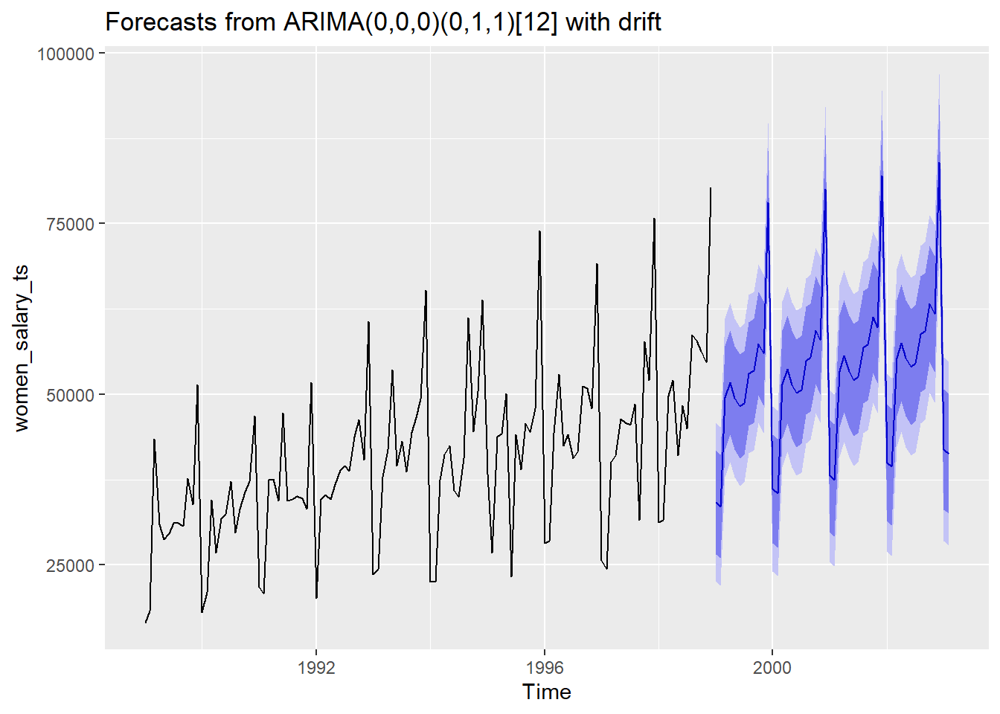
Homens - 50 anos
men_salary_ts = ts(db_ts$men,
frequency = 12,
start = c(1989, 1))
fit_arima_men = auto.arima(men_salary_ts)
fcast_men = forecast(fit_arima_men, h=50)
autoplot(fcast_men)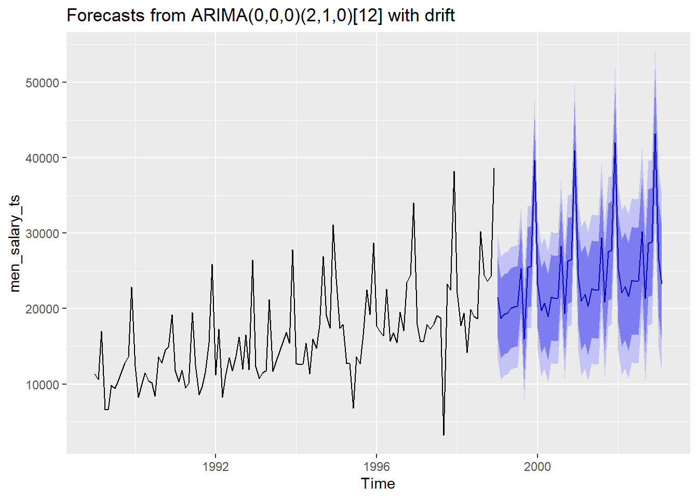
9.11 Extras
Mais gráficos
Plot 2 do modelo (1,0,0)
modelo_sal_men = Arima(db_ts$men, order = c(1,0,0))
# Criar um dataframe com as séries temporais
df_100 <- data.frame(
Tempo = seq_along(modelo_sal_men$fitted),
Ajustado = modelo_sal_men$fitted,
Real = modelo_sal_men$x
)
# Criar o gráfico com ggplot2
ggplot(df_100, aes(x = Tempo)) +
geom_line(aes(y = Ajustado, color = "Ajustado"), size = 1) +
geom_line(aes(y = Real, color = "Real"), size = 1) +
labs(x = "Tempo", y = "Salário", title = "Valores Ajustados e Reais de Salário para Homens ao Longo do Tempo") +
scale_color_manual(values = c("Ajustado" = "red", "Real" = "blue"), guide = "legend") +
theme_minimal()Don't know how to automatically pick scale for object of type <ts>. Defaulting
to continuous.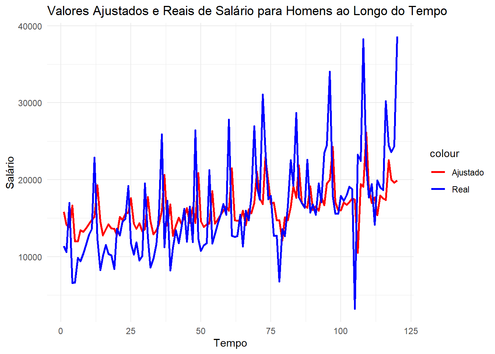
Plot 2 do modelo (0,1,0)
# Criar um dataframe com as séries temporais
df_010 <- data.frame(
Tempo = seq_along(modelo2_sal_men$fitted),
Ajustado = modelo2_sal_men$fitted,
Real = modelo2_sal_men$x
)
# Criar o gráfico com ggplot2
ggplot(df_010, aes(x = Tempo)) +
geom_line(aes(y = Ajustado, color = "Ajustado"), size = 1) +
geom_line(aes(y = Real, color = "Real"), size = 1) +
labs(x = "Tempo", y = "Salário", title = "Valores Ajustados e Reais de Salário para Homens ao Longo do Tempo") +
scale_color_manual(values = c("Ajustado" = "red", "Real" = "blue"), guide = "legend") +
theme_minimal()Don't know how to automatically pick scale for object of type <ts>. Defaulting
to continuous.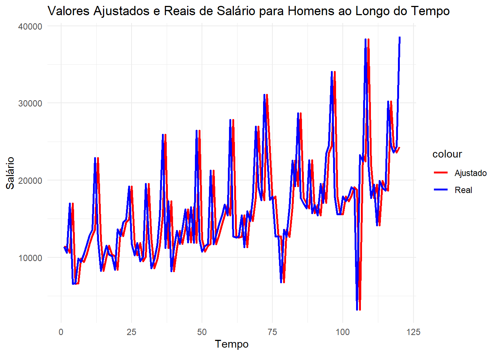
Plot 2 do modelo (1,1,1)
modelo_atuo_sal_men = Arima(db_ts$men, order = c(1,1,1))
# Criar um dataframe com as séries temporais
df_111 <- data.frame(
Tempo = seq_along(modelo_atuo_sal_men$fitted),
Ajustado = modelo_atuo_sal_men$fitted,
Real = modelo_atuo_sal_men$x
)
# Criar o gráfico com ggplot2
ggplot(df_111, aes(x = Tempo)) +
geom_line(aes(y = Ajustado, color = "Ajustado"), size = 1) +
geom_line(aes(y = Real, color = "Real"), size = 1) +
labs(x = "Tempo", y = "Salário", title = "Valores Ajustados e Reais de Salário para Homens ao Longo do Tempo") +
scale_color_manual(values = c("Ajustado" = "red", "Real" = "blue"), guide = "legend") +
theme_minimal()Don't know how to automatically pick scale for object of type <ts>. Defaulting
to continuous.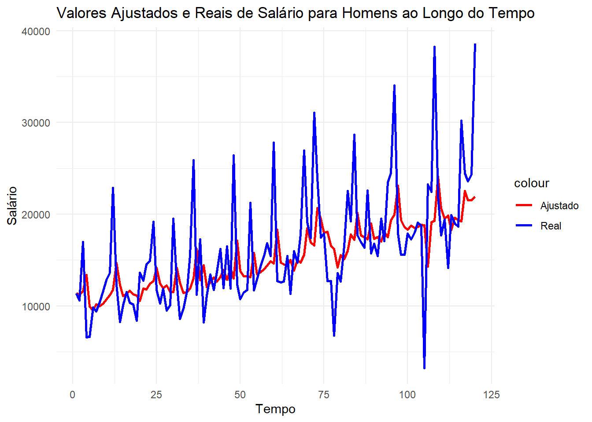
9.12 Verificando resíduos
checkresiduals(modelo_auto_sal_men)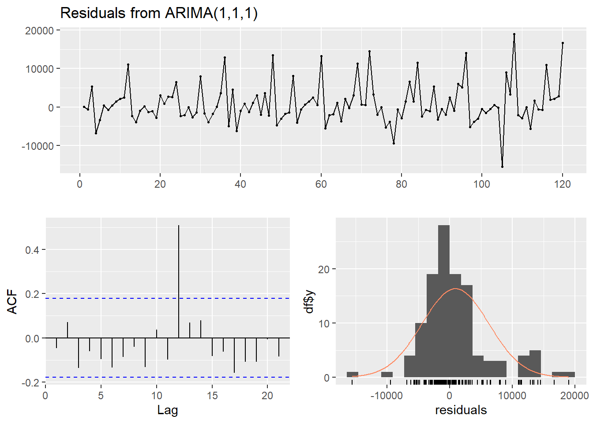
Ljung-Box test
data: Residuals from ARIMA(1,1,1)
Q* = 10.891, df = 8, p-value = 0.208
Model df: 2. Total lags used: 10summary(modelo_auto_sal_men)Series: db_ts$men
ARIMA(1,1,1)
Coefficients:
ar1 ma1
0.2036 -0.9139
s.e. 0.1002 0.0347
sigma^2 = 29737029: log likelihood = -1192.43
AIC=2390.86 AICc=2391.07 BIC=2399.2
Training set error measures:
ME RMSE MAE MPE MAPE MASE
Training set 915.6723 5384.571 3662.003 -5.571742 25.15003 0.7829504
ACF1
Training set -0.046929039.13 Lista 7 resolvida no SPSS
9.14 Referências
https://facebook.github.io/prophet/docs/installation.html#r
https://rpubs.com/mpleo/timeseries_prophet
https://www.youtube.com/watch?v=ny3gRhfVsi4&t=10s
https://www.youtube.com/watch?v=Txuo9JQjnKE ótima ref em PT-BR
https://www.youtube.com/watch?v=RJzmHkGWCxs&list=PLEuzmtv9IuT_vg5oE0lQyZR-wgbVeGztt
9.15 Versões dos pacotes
report(sessionInfo())Analyses were conducted using the R Statistical language (version 4.3.1; R Core
Team, 2023) on Windows 11 x64 (build 22621), using the packages effectsize
(version 0.8.6; Ben-Shachar MS et al., 2020), Rcpp (version 1.0.11;
Eddelbuettel D et al., 2023), tm (version 0.7.11; Feinerer I, Hornik K, 2023),
flexplot (version 0.20.5; Fife D, 2024), lubridate (version 1.9.3; Grolemund G,
Wickham H, 2011), rlang (version 1.1.1; Henry L, Wickham H, 2023), NLP (version
0.2.1; Hornik K, 2020), forecast (version 8.21.1; Hyndman R et al., 2023),
parameters (version 0.21.3; Lüdecke D et al., 2020), performance (version
0.10.8; Lüdecke D et al., 2021), easystats (version 0.6.0; Lüdecke D et al.,
2022), see (version 0.8.1; Lüdecke D et al., 2021), insight (version 0.19.6;
Lüdecke D et al., 2019), bayestestR (version 0.13.1; Makowski D et al., 2019),
modelbased (version 0.8.6; Makowski D et al., 2020), report (version 0.5.7;
Makowski D et al., 2023), correlation (version 0.8.4; Makowski D et al., 2022),
tibble (version 3.2.1; Müller K, Wickham H, 2023), datawizard (version 0.9.0;
Patil I et al., 2022), foreign (version 0.8.85; R Core Team, 2023), prophet
(version 1.0; Taylor S, Letham B, 2021), rempsyc (version 0.1.6; Thériault R,
2023), tseries (version 0.10.55; Trapletti A, Hornik K, 2023), ggplot2 (version
3.4.4; Wickham H, 2016), forcats (version 1.0.0; Wickham H, 2023), stringr
(version 1.5.1; Wickham H, 2023), tidyverse (version 2.0.0; Wickham H et al.,
2019), dplyr (version 1.1.3; Wickham H et al., 2023), purrr (version 1.0.2;
Wickham H, Henry L, 2023), readr (version 2.1.4; Wickham H et al., 2023), tidyr
(version 1.3.0; Wickham H et al., 2023), zoo (version 1.8.12; Zeileis A,
Grothendieck G, 2005), lmtest (version 0.9.40; Zeileis A, Hothorn T, 2002) and
kableExtra (version 1.3.4; Zhu H, 2021).
References
----------
- Ben-Shachar MS, Lüdecke D, Makowski D (2020). "effectsize: Estimation of
Effect Size Indices and Standardized Parameters." _Journal of Open Source
Software_, *5*(56), 2815. doi:10.21105/joss.02815
<https://doi.org/10.21105/joss.02815>, <https://doi.org/10.21105/joss.02815>.
- Eddelbuettel D, Francois R, Allaire J, Ushey K, Kou Q, Russell N, Ucar I,
Bates D, Chambers J (2023). _Rcpp: Seamless R and C++ Integration_. R package
version 1.0.11, <https://CRAN.R-project.org/package=Rcpp>. Eddelbuettel D,
François R (2011). "Rcpp: Seamless R and C++ Integration." _Journal of
Statistical Software_, *40*(8), 1-18. doi:10.18637/jss.v040.i08
<https://doi.org/10.18637/jss.v040.i08>. Eddelbuettel D (2013). _Seamless R and
C++ Integration with Rcpp_. Springer, New York. doi:10.1007/978-1-4614-6868-4
<https://doi.org/10.1007/978-1-4614-6868-4>, ISBN 978-1-4614-6867-7.
Eddelbuettel D, Balamuta J (2018). "Extending R with C++: A Brief Introduction
to Rcpp." _The American Statistician_, *72*(1), 28-36.
doi:10.1080/00031305.2017.1375990
<https://doi.org/10.1080/00031305.2017.1375990>.
- Feinerer I, Hornik K (2023). _tm: Text Mining Package_. R package version
0.7-11, <https://CRAN.R-project.org/package=tm>. Feinerer I, Hornik K, Meyer D
(2008). "Text Mining Infrastructure in R." _Journal of Statistical Software_,
*25*(5), 1-54. doi:10.18637/jss.v025.i05
<https://doi.org/10.18637/jss.v025.i05>.
- Fife D (2024). _flexplot: Graphically Based Data Analysis Using 'flexplot'_.
R package version 0.20.5.
- Grolemund G, Wickham H (2011). "Dates and Times Made Easy with lubridate."
_Journal of Statistical Software_, *40*(3), 1-25.
<https://www.jstatsoft.org/v40/i03/>.
- Henry L, Wickham H (2023). _rlang: Functions for Base Types and Core R and
'Tidyverse' Features_. R package version 1.1.1,
<https://CRAN.R-project.org/package=rlang>.
- Hornik K (2020). _NLP: Natural Language Processing Infrastructure_. R package
version 0.2-1, <https://CRAN.R-project.org/package=NLP>.
- Hyndman R, Athanasopoulos G, Bergmeir C, Caceres G, Chhay L, O'Hara-Wild M,
Petropoulos F, Razbash S, Wang E, Yasmeen F (2023). _forecast: Forecasting
functions for time series and linear models_. R package version 8.21.1,
<https://pkg.robjhyndman.com/forecast/>. Hyndman RJ, Khandakar Y (2008).
"Automatic time series forecasting: the forecast package for R." _Journal of
Statistical Software_, *26*(3), 1-22. doi:10.18637/jss.v027.i03
<https://doi.org/10.18637/jss.v027.i03>.
- Lüdecke D, Ben-Shachar M, Patil I, Makowski D (2020). "Extracting, Computing
and Exploring the Parameters of Statistical Models using R." _Journal of Open
Source Software_, *5*(53), 2445. doi:10.21105/joss.02445
<https://doi.org/10.21105/joss.02445>.
- Lüdecke D, Ben-Shachar M, Patil I, Waggoner P, Makowski D (2021).
"performance: An R Package for Assessment, Comparison and Testing of
Statistical Models." _Journal of Open Source Software_, *6*(60), 3139.
doi:10.21105/joss.03139 <https://doi.org/10.21105/joss.03139>.
- Lüdecke D, Ben-Shachar M, Patil I, Wiernik B, Makowski D (2022). "easystats:
Framework for Easy Statistical Modeling, Visualization, and Reporting." _CRAN_.
R package, <https://easystats.github.io/easystats/>.
- Lüdecke D, Patil I, Ben-Shachar M, Wiernik B, Waggoner P, Makowski D (2021).
"see: An R Package for Visualizing Statistical Models." _Journal of Open Source
Software_, *6*(64), 3393. doi:10.21105/joss.03393
<https://doi.org/10.21105/joss.03393>.
- Lüdecke D, Waggoner P, Makowski D (2019). "insight: A Unified Interface to
Access Information from Model Objects in R." _Journal of Open Source Software_,
*4*(38), 1412. doi:10.21105/joss.01412 <https://doi.org/10.21105/joss.01412>.
- Makowski D, Ben-Shachar M, Lüdecke D (2019). "bayestestR: Describing Effects
and their Uncertainty, Existence and Significance within the Bayesian
Framework." _Journal of Open Source Software_, *4*(40), 1541.
doi:10.21105/joss.01541 <https://doi.org/10.21105/joss.01541>,
<https://joss.theoj.org/papers/10.21105/joss.01541>.
- Makowski D, Ben-Shachar M, Patil I, Lüdecke D (2020). "Estimation of
Model-Based Predictions, Contrasts and Means." _CRAN_.
<https://github.com/easystats/modelbased>.
- Makowski D, Lüdecke D, Patil I, Thériault R, Ben-Shachar M, Wiernik B (2023).
"Automated Results Reporting as a Practical Tool to Improve Reproducibility and
Methodological Best Practices Adoption." _CRAN_.
<https://easystats.github.io/report/>.
- Makowski D, Wiernik B, Patil I, Lüdecke D, Ben-Shachar M (2022).
"correlation: Methods for Correlation Analysis." Version 0.8.3,
<https://CRAN.R-project.org/package=correlation>. Makowski D, Ben-Shachar M,
Patil I, Lüdecke D (2020). "Methods and Algorithms for Correlation Analysis in
R." _Journal of Open Source Software_, *5*(51), 2306. doi:10.21105/joss.02306
<https://doi.org/10.21105/joss.02306>,
<https://joss.theoj.org/papers/10.21105/joss.02306>.
- Müller K, Wickham H (2023). _tibble: Simple Data Frames_. R package version
3.2.1, <https://CRAN.R-project.org/package=tibble>.
- Patil I, Makowski D, Ben-Shachar M, Wiernik B, Bacher E, Lüdecke D (2022).
"datawizard: An R Package for Easy Data Preparation and Statistical
Transformations." _Journal of Open Source Software_, *7*(78), 4684.
doi:10.21105/joss.04684 <https://doi.org/10.21105/joss.04684>.
- R Core Team (2023). _foreign: Read Data Stored by 'Minitab', 'S', 'SAS',
'SPSS', 'Stata', 'Systat', 'Weka', 'dBase', ..._. R package version 0.8-85,
<https://CRAN.R-project.org/package=foreign>.
- R Core Team (2023). _R: A Language and Environment for Statistical
Computing_. R Foundation for Statistical Computing, Vienna, Austria.
<https://www.R-project.org/>.
- Taylor S, Letham B (2021). _prophet: Automatic Forecasting Procedure_. R
package version 1.0, <https://CRAN.R-project.org/package=prophet>.
- Thériault R (2023). "rempsyc: Convenience functions for psychology." _Journal
of Open Source Software_, *8*(87), 5466. doi:10.21105/joss.05466
<https://doi.org/10.21105/joss.05466>, <https://doi.org/10.21105/joss.05466>.
- Trapletti A, Hornik K (2023). _tseries: Time Series Analysis and
Computational Finance_. R package version 0.10-55,
<https://CRAN.R-project.org/package=tseries>.
- Wickham H (2016). _ggplot2: Elegant Graphics for Data Analysis_.
Springer-Verlag New York. ISBN 978-3-319-24277-4,
<https://ggplot2.tidyverse.org>.
- Wickham H (2023). _forcats: Tools for Working with Categorical Variables
(Factors)_. R package version 1.0.0,
<https://CRAN.R-project.org/package=forcats>.
- Wickham H (2023). _stringr: Simple, Consistent Wrappers for Common String
Operations_. R package version 1.5.1,
<https://CRAN.R-project.org/package=stringr>.
- Wickham H, Averick M, Bryan J, Chang W, McGowan LD, François R, Grolemund G,
Hayes A, Henry L, Hester J, Kuhn M, Pedersen TL, Miller E, Bache SM, Müller K,
Ooms J, Robinson D, Seidel DP, Spinu V, Takahashi K, Vaughan D, Wilke C, Woo K,
Yutani H (2019). "Welcome to the tidyverse." _Journal of Open Source Software_,
*4*(43), 1686. doi:10.21105/joss.01686 <https://doi.org/10.21105/joss.01686>.
- Wickham H, François R, Henry L, Müller K, Vaughan D (2023). _dplyr: A Grammar
of Data Manipulation_. R package version 1.1.3,
<https://CRAN.R-project.org/package=dplyr>.
- Wickham H, Henry L (2023). _purrr: Functional Programming Tools_. R package
version 1.0.2, <https://CRAN.R-project.org/package=purrr>.
- Wickham H, Hester J, Bryan J (2023). _readr: Read Rectangular Text Data_. R
package version 2.1.4, <https://CRAN.R-project.org/package=readr>.
- Wickham H, Vaughan D, Girlich M (2023). _tidyr: Tidy Messy Data_. R package
version 1.3.0, <https://CRAN.R-project.org/package=tidyr>.
- Zeileis A, Grothendieck G (2005). "zoo: S3 Infrastructure for Regular and
Irregular Time Series." _Journal of Statistical Software_, *14*(6), 1-27.
doi:10.18637/jss.v014.i06 <https://doi.org/10.18637/jss.v014.i06>.
- Zeileis A, Hothorn T (2002). "Diagnostic Checking in Regression
Relationships." _R News_, *2*(3), 7-10.
<https://CRAN.R-project.org/doc/Rnews/>.
- Zhu H (2021). _kableExtra: Construct Complex Table with 'kable' and Pipe
Syntax_. R package version 1.3.4,
<https://CRAN.R-project.org/package=kableExtra>.